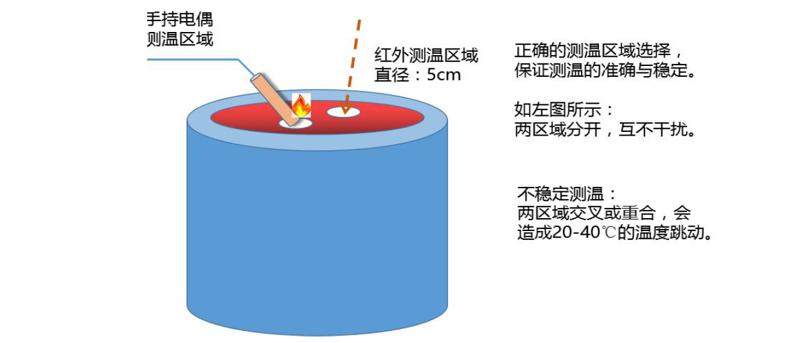
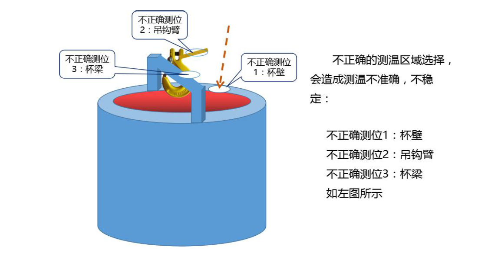

1测温位置是汤杯中的一个局部区域点；
2测温值对应的时点是5-7 秒测温时段中最高温度只对应的时点。
汤杯中汤液的温度分布不是完全均匀的，下面是南钢的一个参考案例：
中间包不同区域钢水温度的分布
由于测温传感器需要插入钢水液面300mm 以下，并且在测温过程中会伴随着小范
围的液面波动，中间包钢水温度随钢水深度的分布侧量结果表明:
1中间包中上部温度在浇铸过程中波动较小;
2底部存在低温区，高低温钢水的温差达约20℃;
3顶部也存在低温层，这与钢水面散热过大有关。
然而沿中间包水平方向也有钢水的强烈循环流动，以及注入钢流的稳定性随时间有
所变化，此测量结果只反映了安装热电偶部位某一时刻钢水温度在垂直方向上的变化.
说明： 1、大包注流温度2、中层钢水温度3、上层钢水温度4、下层钢水温度
对中间包传热过程分析可知:在靠近渣面处，由于钢水向履盖渣传热，使渣一钢界 面的钢水侧存在一低温区;同时由于渣面的对外传热和包衬的热传导，导致钢水产生自 然对流，在中间包底部形成一低温区域;中间包内中上部钢水则构成了高温区。其他研 究者的研究结果也表明：中间包钢水在包中上部温度均匀，为等温区;底部存在低温 钢水区;顶部存在低温钢水区。
红外非接触在线测温是直径5 厘米左右的汤液表面平均温度，与点温度相比更具代表 性，更能反应汤液的实际温度。
在实验室或者办公室环境下红外非接触在线测温装置测温是非常稳定的，对1500℃的 黑体源测试，测温值波动范围不超过±1.5℃，也就是±1‰的精度。
但在工业现场，红外测温与手持热电偶测温对比，二者测温值存在偏差，主要原因有以 下三方面：
工业现场最方便的就是以手持热电偶测温值为比较基准。但我们知道手持热电偶测温值 的精度在±5℃，红外测温精度也是±5℃，两种测温方式如果偏差是反向的，就会有10℃ 的测温偏差。如果遇到快速热电偶本身存在质量问题，或者使用次数超限造成超出±5℃的 精度范围，那么就不能正确判定红外测温的实际精度。这种情况占一定的比例。
测温区域是直径5 厘米的圆形区域，只要此区域落在汤液表面，不被杯壁、快速热电 偶吊钩遮拦，就不会影响测温精度。此次测温遇到下图所示情况：
 当测温装置固定安装后，汤杯的落置位直接决定测温区域， 汤杯落置位准确，测温值就相对准确稳定。（右图是现场不正确 的汤杯落置位）
解决方案：
1激光指示直径5 厘米的红外测温区域及热电偶测温区域；
2激光指示落杯区域；
3划线指示落杯区域；
就A 企业测温现场情况而言，工艺操作管理比较规范。我们的测温时段选择在二次扒 渣之后，所以烟雾的影响较小，对测温精度的影响不超过±3℃。
红外测温基于对红外光强的检测，不同物质由于发射率不同，即便是同一温度测量结果 也会有所不同，所以必须对检测数据进行修正，才能得出正确的温度值。
A 企业注汤线的汤料是在不停变换的，所以红外测温需要根据不同的汤料及时进行修正， 我们的测温实施方案对这个问题有相对的处理方案，保证侧温的准确。
后附本次红外测温的数据分析报告。本次实际测温时间有限，是3 月23 日白班。对三 种杯程最多的汤料测温数据进行了分析。因对3 种汤料全杯程进行分析，没有剔除上述测 温干扰造成测温偏差较大的杯程数据。但干扰因素会在项目实施过程中予以减低消除。保证 测温精度达到±5℃。
Copyright © 2015-2017 三足鸟版权所有 京ICP备xxx号-2 京公网安备xxxx号